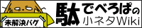
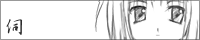

開発者向けヘルプ：開発リンク集
伺か/SSP関連コンテンツの製作に役立つ情報・プログラム・素材・ツールなどのリンク集です。
なお冗長になるのでここには乗せていませんが、コンテンツの公開および公開後の宣伝などには、もう一つのリンク集ページにあるサイトを活用して、ユーザの目に触れる工夫をするとみんなで幸せになれます。
仕様書・リファレンス
| UKADOC | |
| http://ukadoc.googlecode.com/svn/trunk/manual/index.html | |
| SSPの公式仕様文章集です。 Sakura ScriptやSHIORI Eventのリファレンスがあります。 |
|
| 大八州.NET | |
| http://www.ooyashima.net/db/ | |
| 伺か関係の非公式仕様集です。 非公式とはいえかなり充実した情報がわかり易く揃っているので、他の資料と合わせて読む機会もあるでしょう。 |
|
| さくらスクリプトwiki | |
| http://www36.atwiki.jp/SakuraScript/pages/1.html | |
| さくらスクリプトに関するまとめwikiです。 用例などの面でukadocより踏み込んだ解説も多々あるので、併せて活用しましょう。 |
|
|  | 駄めなでべろぱの小ネタwiki |
| http://emily.shillest.net/specwiki/ | |
| 通称駄でべ。不特定多数の開発・製作者が自由に色んなメモをつづる場所です。 現在進行形のメモと、過去の資料や議論の痕跡とが混在しているので、書かれた時期に気をつけて読んでいってください。 |
|
|  | うさださくら |
| http://usada.sakura.vg/ | |
| 本家伺かの配布サイトです。 更新は止まって久しいですが、開発中に旧い仕様を調べる必要が出てきた場合などには立ち返りましょう。 |
|
SHIORI
【未遂】その他素材・プログラム・ツール
| freeshell wiki | |
| http://wikiwiki.jp/feeshell/ | |
| フリーシェルのまとめwikiです。 無料で使えるシェル素材をお探しの方はこちら。 |
|
| 整備班 | |
| http://ms.shillest.net/ | |
| ばぐとら研直営サイト。いろいろ置いてます。 代表的なSHIORIである里々、YAYAや、公開配布に有用なツール、素材、もちろんゴーストもあります。 |
|
| さおりん | |
| http://priest.so.land.to/nisesakura/saorin.html | |
| SAORIのまとめサイトです。 更新停止した「さおこれ」を補完する役割を果たしています。 |
|